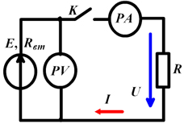
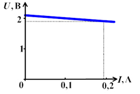

|  |
При разомкнутом ключе К показание вольтметра 2,1 В (см. рис. слева). Когда ключ замкнут, амперметр фиксирует ток 1 А. Сопротивление приёмника R = 2 Ом.
а) Определить ЭДС источника напряжения Е, внутреннее сопротивление ИН Rвт и напряжение U на зажимах приёмника.
б) Построить график внешней характеристики ИН U = f(I) при изменении сопротивления нагрузки от 1 до 40 Ом. |
a) 1. Когда цепь разомкнута, вольтметр фиксирует значение напряжения ХХ, практически равное значению ЭДС, т. е. Е = UХ = 2,1 В.
2. Для определения внутреннего сопротивления Rвт источника напряжения воспользуемся законом Ома для всей цепи: I = E/(Rвт + R), откуда Rвт = E/I - R = 2,1/1 - 2 = 0,1 Ом.
3. Напряжение на зажимах приёмника (и источника)U = E - RвтI = RI = 2,1 - 0,1Ч1 = 2 B.
б) 1. Для построения графика внешней характеристики ИН U = E - RвтI = 2,1 - 0,1ЧI или U = RI
необходимо предварительно рассчитать ток I при различных значениях сопротивления R приёмника.
2. Для этой цепи выбираем значения R (см. верхнюю строку таблицы): от R = Ґ (режим ХХ, при котором ток I = 0, а напряжение U = E = 2,1 В), до R = 0 (аварийный режим КЗ для ИН, при котором напряжение U = 0, а ток I = Iк = Е/Rвт = 2,1/0,1 = 21 А).
3. Определим значения тока по уравнению I = E/(Rвт + R) = 2,1/(0,1 + R) и заносим в соответствующие ячейки второй строки таблицы.
4. Определим значения напряжения U и заносим в ячейки последней строки таблицы.

R , Ом |
0 |
1 |
10 |
20 |
40 |
Ґ |
I , A |
21 |
1,91 |
0,2079 |
0, 1045 |
0,0524 |
0 |
U , B |
0 |
1,91 |
2,079 |
2,09 |
2,095 |
2,1 |
|